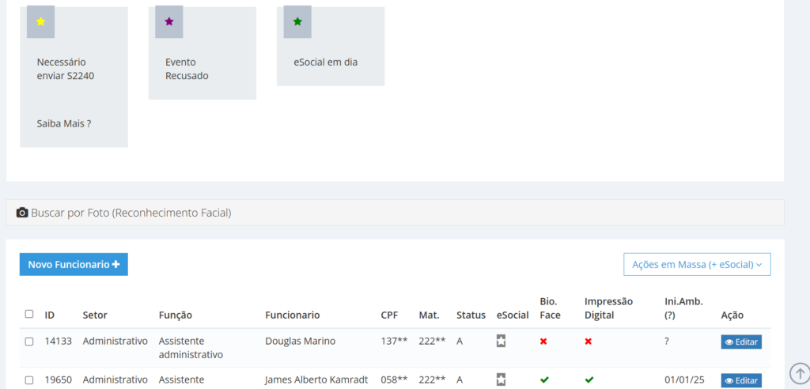
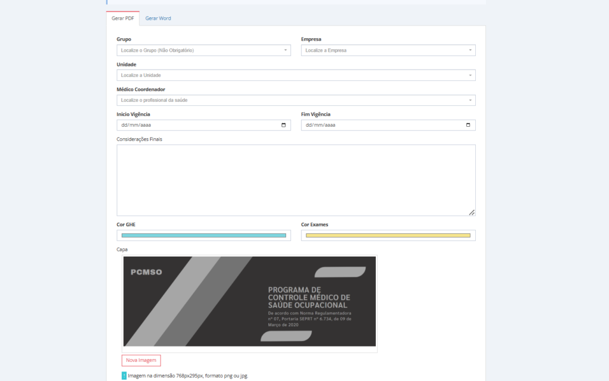
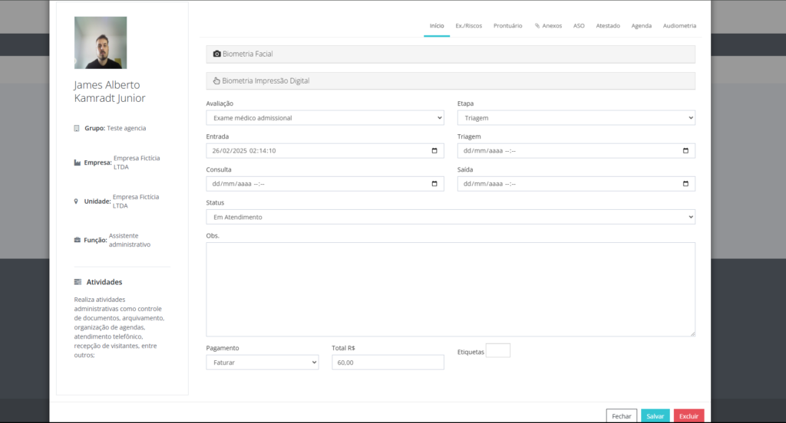
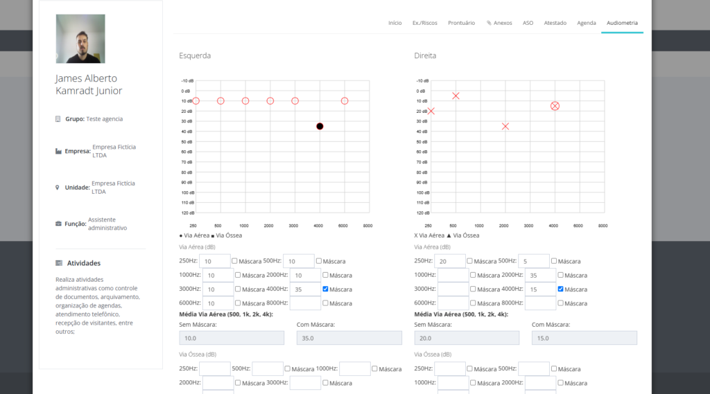
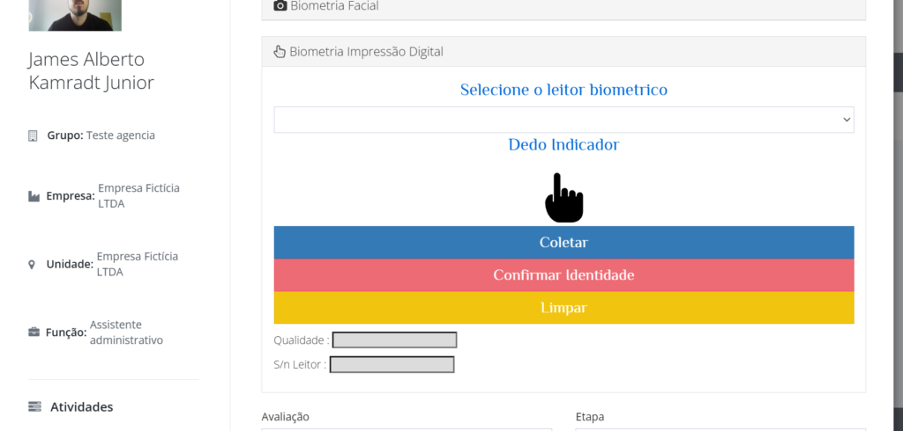
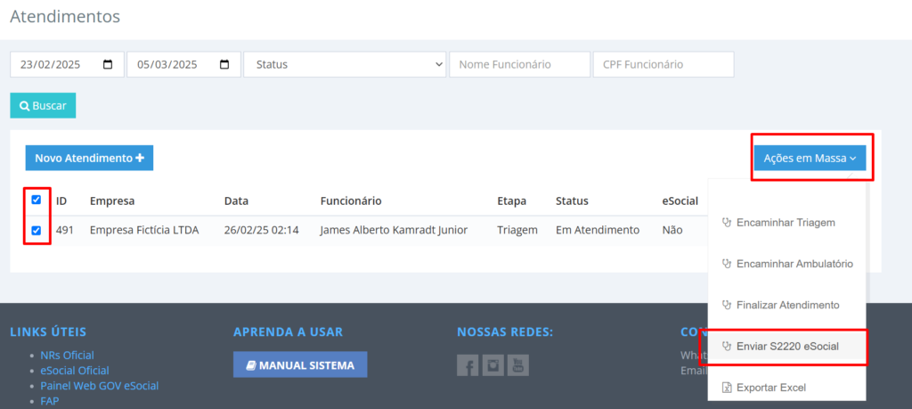

Do PCMSO ao ASO, audiometria e eSocial: o caminho completo no Bevart
Um percurso só, do cadastro do GHE até o evento transmitido: como o risco vira exame, o exame vira atendimento, o atendimento vira ASO assinado e o ASO vira S-2220.

O essencial em 30 segundos
- O PCMSO é gerado a partir do inventário de riscos e dos exames vinculados ao GHE — não é um documento digitado do zero.
- O atendimento médico acontece dentro do sistema: prontuário, anamnese, audiometria e ASO saem do mesmo fluxo.
- O ASO assinado alimenta o S-2220, que pode ser transmitido em massa.
Na maioria das operações de saúde ocupacional, a informação passa por quatro sistemas diferentes até chegar ao eSocial: uma planilha define quem faz qual exame, a clínica registra o atendimento em outro lugar, o ASO vira PDF em uma pasta e alguém redigita tudo no evento. Cada troca de sistema é uma chance de divergência — e divergência em SST aparece anos depois, na perícia.
Este artigo percorre o caminho inteiro dentro de um sistema só, na ordem em que ele acontece na prática.
1. A base: empresa, setores, funções e GHE
Tudo começa no cadastro: empresas, setores, funções e a montagem dos Grupos Homogêneos de Exposição. É o GHE que responde "quem está exposto a quê" — e é dessa resposta que sai a lista de exames de cada função.
Os profissionais que atuam no processo, como médicos e fonoaudiólogos, também são cadastrados aqui, porque é a assinatura deles que vai fechar os documentos mais adiante.

O cadastro do funcionário aceita biometria facial e leitura de digital, o que importa mais adiante: é o que permite provar quem esteve presente no atendimento e quem assinou o quê.
2. O PCMSO sai do inventário
Com o GHE montado e os exames vinculados a ele, o PCMSO é gerado na área de documentos. A diferença em relação ao modelo em Word é direta: o programa reflete a exposição registrada, e não a memória de quem está escrevendo. Se o risco muda no inventário, o próximo PCMSO nasce diferente.

Do PCMSO sai também a convocação de exames, que é o que transforma a periodicidade escrita no programa em agenda de gente de verdade. Se você ainda controla isso em planilha, vale ler como organizar exames ocupacionais sem perder prazo.
3. O atendimento médico
O módulo de saúde organiza os atendimentos por status e etiqueta, então a recepção enxerga a fila: quem chegou, quem está em atendimento, o que falta fechar. O reconhecimento facial na recepção resolve a identificação sem papel.

Dentro do atendimento ficam prontuário, anamnese, atestados, o ASO e os exames complementares — inclusive a audiometria, registrada com o traçado e a conclusão no mesmo lugar do histórico do trabalhador.

Um cadastro, quatro documentos, zero redigitação
Inventário, PCMSO, ASO e evento do eSocial consumindo a mesma informação — é isso que evita a divergência que aparece na auditoria.
Criar conta grátis4. Assinatura digital e integridade
Os documentos gerados recebem hash de segurança: qualquer alteração posterior à assinatura quebra a validação, o que é justamente o ponto de um documento de saúde ocupacional. O trabalhador assina por biometria facial ou digital, e o médico assina com certificado A1 emitido no padrão ICP-Brasil — a assinatura é pessoal dele, não da empresa.

5. O envio ao eSocial
Com o ASO fechado, o S-2220 pode ser transmitido — inclusive em massa, para o lote de atendimentos do período. Como os campos vêm do próprio ASO, o trabalho que sobra é conferir, não redigitar.

Para entender o que cada evento de SST carrega e onde eles costumam travar, veja o guia dos eventos S-2210, S-2220 e S-2240.
6. O cliente acompanha sozinho
Cada unidade tem acesso próprio para consultar documentos gerados e ver exames vencidos e pendentes — o que tira da consultoria a rotina de reenviar arquivo. Esse é o assunto do artigo sobre a área do cliente.
Antes de rodar a convocação do mês, confira se os GHEs refletem a realidade atual. Convocação errada custa duas vezes: o exame que não precisava e o exame que faltou.
Perguntas frequentes
O PCMSO pode ser gerado sem o inventário de riscos?
Tecnicamente o documento sai, mas fica sem base: são as exposições do inventário, organizadas por GHE, que determinam quais exames cada função precisa e com que periodicidade.
Quem assina o ASO?
O médico responsável pelo exame, com certificado digital pessoal. O trabalhador assina o recebimento por biometria facial ou digital, e as duas evidências ficam anexadas ao documento.
Como sei que o documento não foi alterado depois de assinado?
Cada documento gerado recebe um hash de segurança. Se o conteúdo mudar depois da assinatura, a validação não confere — é isso que dá valor probatório ao arquivo.
Dá para enviar vários S-2220 de uma vez?
Sim. O envio em massa transmite o lote de eventos do período, com status individual por trabalhador para você tratar apenas o que voltar com erro.